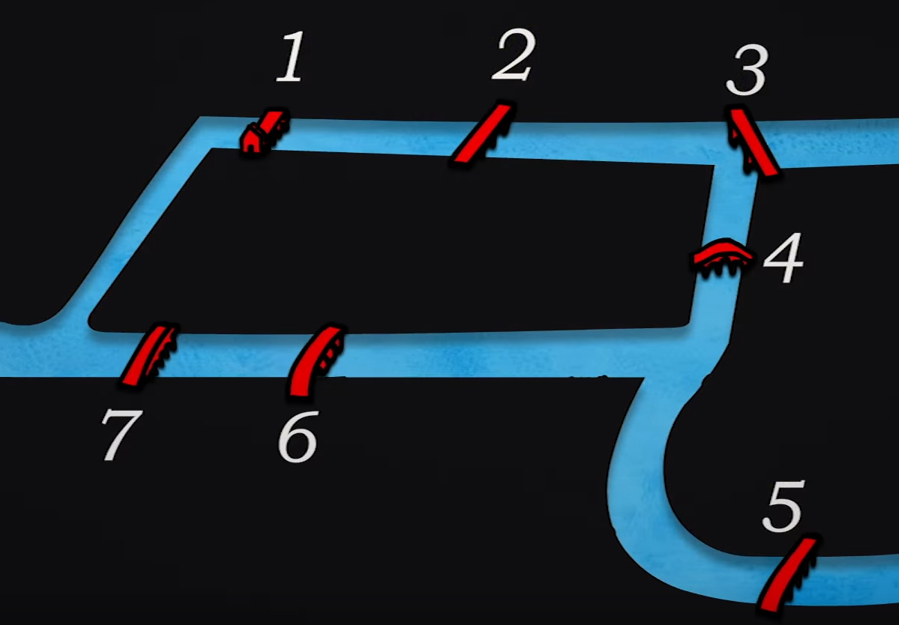
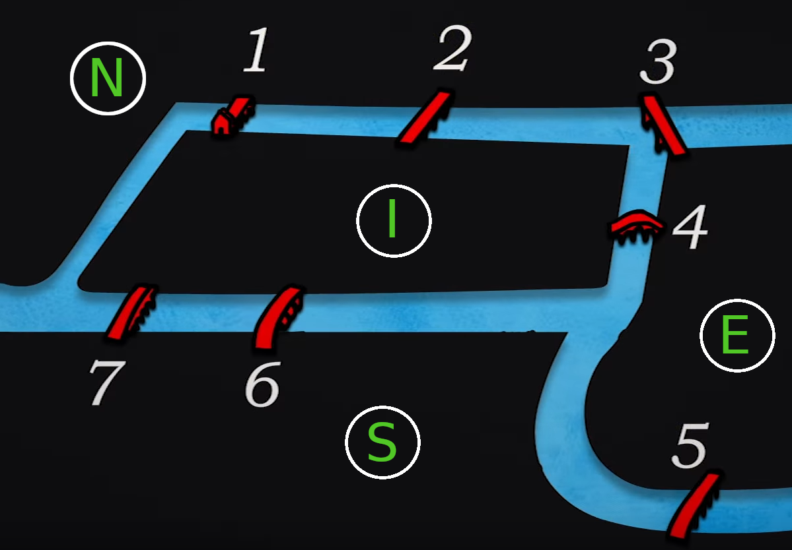
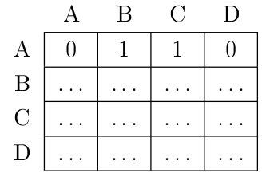
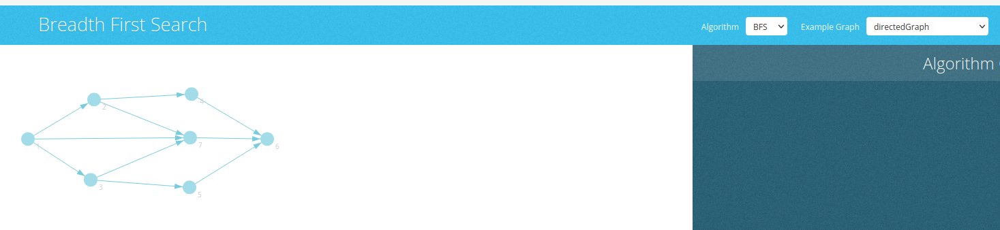

C11 Graphes
Activités
 Activité 1 : Le problème des ponts de Königsberg
Activité 1 : Le problème des ponts de Königsberg
Voici une illustration du problème des septs points de Königsberg extrait de la vidéo précédente :

On rappelle que le but du problème est de trouver un chemin qui permet de passer une seule et unique fois par chaque pont de la ville.- Faire quelques essais, que penser de ce problème ?
-
Vers les graphes
a. On divise la ville en quatre zones notées N (nord de la ville), S (sud de la ville), I (île centrale) et E (est de la ville) comme illustré ci-dessous. Faire un schéma en représentant chaque zone par un rond et un pont par un lien entre ces zones.

Aide
Vous devriez obtenir un schéma similaire à :
graph TD N(("N")) I(("I")) S(("S")) E(("E")) N-- 1 ---I N-- 2 ---I I-- 6 ---S I-- 7 ---S I-- 4 ---E N-- 3 ---E E-- 5 ---Sb. Le schéma obtenu s'appelle un graphe, rechercher sur le Web comment se nomment les zones et les ponts dans le vocabulaire de la théorie des graphes.
c. Donner le degré de chaque sommet de ce graphe
Aide
On pourra remarquer que les arbres sont des graphes particuliers et se rappeler de la notion de degré (ou arité) d'un noeud dans un arbre.
-
Preuve mathématique
a. Supposons qu'une solution au problème qui commence et finit dans la même zone existe, en déduire une propriété du degré de chaque sommet.
Aide
Raisonner sur le fait que si on entre dans une zone, il faut pouvoir en sortir par un pont non encore utilisé.
b. Même question si on suppose que la solution commence et finit dans deux zones différentes.
Aide
Traiter séparément des autres zones, celle de départ et d'arrivée.
-
Pour aller plus loin ...
a. En supprimant un seul pont, est-il possible d'obtenir une solution au problème ? Si oui lequel ?
b. Même question en construisant un nouveau pont.
Activité 2 : Vocabulaire sur les graphes
- En vous aidant de vos connaissances sur l'île de la Réunion (et si besoin du Web), dessiner le graphe représentant le réseau routier de la Réunion. On fera uniquement figuré les villes suivantes comme sommet du graphe : Saint-Denis, Saint-André, Saint-Benoît, Le Tampon, Saint-Pierre, Cilaos, Saint-Louis, Saint-Paul, Saint-Denis, Saint-Joseph, Salazie.
- Rechercher la signification des voisins d'un sommet d'un graphe. Donner la liste des voisins de Saint-Benoît.
- On suppose qu'on rajoute La Nouvelle et Aurère (des écarts de Mafate) comme sommets et qu'une route est construite entre ces deux villages. Quelle propriété du graphe n'est plus valide ?
- On suppose qu'on ajoute La Possession comme sommet, et qu'on fait figurer les deux routes permettant de relier Saint-Denis (La route en corniche et la route de la montagne). Que dire de ce nouveau graphe ?
- On suppose que la route de la montagne est maintenant à sens unique et ne peut être emprunté que dans le sens Saint-Denis vers La Possession. Que dire de ce nouveau graphe ?
- On suppose maintenant que sur le graphe initial, on fait figurer la distance entre les deux villes. Comment s'appelle ce type de graphe ?
Activité 3 : Implémentation avec matrice d'adjacence
-
Principe de l'implémentation
On prend l'exemple du graphe orienté suivant à 4 noeuds :graph LR A(("A")) B(("B")) C(("C")) D(("D")) A --> B A --> C B --> C B --> D C --> Da. Recopier et compléter le tableau suivant dans lequel les lignes et les colonnes représentent les sommets et dans lequel on indique par un 1 la présence d'une arête allant du sommet de la ligne vers celui de la colonne et par 0 son absence

Note
Si on numérote les sommets du graphe (A le numéro 1, B le numéro 2, ...), il n'est plus nécessaire d'indiquer les noms des sommets sur les lignes et les colonnes.
b. De façon générale, une matrice en mathématiques est un tableau de nombres, ici, on a donc représenté notre graphe par une matrice appelé matrice d'adjacence de ce graphe : $$\begin{pmatrix} 0 & 1 & 1 & 0 \\ \dots & \dots & \dots & \dots \\ \dots & \dots & \dots & \dots \\ \dots & \dots & \dots & \dots \\ \dots & \dots & \dots & \dots \\ \end{pmatrix} $$ En nommant les sommets \(S_1, S_2, S_3\) et \(S_4\), dessiner le graphe dont la matrice d'adjacence est : $$\begin{pmatrix} 0 & 0 & 1 & 1 \\ 1 & 0 & 0 & 0 \\ 1 & 0 & 0 & 0 \\ 1 & 1 & 1 & 0 \\ \end{pmatrix} $$ c. Que peut-on dire d'un graphe dont la matrice d'adjacence est symétrique par rapport à sa diagonale principale ?
d. Proposer une méthode pour représenter un graphe pondéré par une matrice d'adjacence.
-
Implémentation en python
On s'inspire de ce qui a été fait pour les arbres et on utilisera la poo pour représenter un graphe par sa matrice d'adjacence. Enfin, on suppose qu'on implémente des graphes orientés.- Quelle type de données de Python est souhaitable pour représenter les sommets ?
- Même question pour la matrice d'adjacence
- Pour le constructeur de la classe Graphe, on propose de fournir uniquement les sommets et de créer l'objet graphe ayant sa matrice d'adjacence vide initialement. De plus on ajoute un attribut
tailleau graphe. Compléter le code ci-dessous :
class Graphe: def __init__(self,sommets): self.sommets=sommets self.taille = len(......) self.matrice = .............-
Poursuivre cette implémentation en ajoutant une méthode d'ajout d'une arête.
Aide
- Cette méthode prend en paramètre l'origine et l'extrémité de l'arête à ajouter.
- On pourra vérifier que l'origine et l'extrémité sont bien dans la liste de sommets et rechercher leur position grâce à la méthode
indexdes listes de python.
-
Ajouter une méthode de suppression d'une arête
- Ajouter une méthode d'affichage de la matrice d'adjacence
- Ecrire la méthode
voisinsqui prend en paramètre un sommet et renvoie la liste de ses voisins.
Activité 4 : Implémentation avec des listes d'adjacences
-
Principe de l'implémentation
On reprend l'exemple du graphe orienté déjà utilisé à l'activité précédentegraph LR A(("A")) B(("B")) C(("C")) D(("D")) A --> B A --> C B --> C B --> D C --> Da. Compléter le schéma suivant où on a fait figuré à côté de chaque sommet la liste des sommets adjacents :
A : B,CB : ...C : .... : ...
b. Dessiner le graphe dont la représentation par liste d'adjacence est :
R : SS : R,T,U,VT : VU :V : R,U
-
Implémentation en Python
On donne ci-dessous le constructeur d'une classeGraphequi implémente les graphes sous la forme de listes d'adjacence :class Graphe: def __init__(self,sommets): self.taille = len(sommets) self.listes = {} for s in sommets: self.listes[s]=[]a. Quel est le type de l'attribut
listesd'un objet de la classeGraphe?b. On suppose qu'on crée un objet de la classe
Grapheen donnant en paramètre la liste["A","B","C","D"]. Quel est alors le contenu de l'attributlistesde cet objet ?c. Poursuivre cette implémentation en ajoutant une méthode d'ajout d'une arête.
d. Ajouter une méthode de suppression d'une arête
e. Proposer une méthode permettant d'ajouter un sommet.
f. Proposer une méthode permettant de supprimer un sommet.
g. Ecrire la méthode
voisinsqui prend en paramètre un sommet et renvoie la liste de ses voisins.
Activité 5 : Parcours d'un graphe
-
Visualisation d'un parcours depth first search
Un outil en ligne, permet de visualiser le résultat du parcours en profondeur d'un graphe. Un graphe est donné en exemple, mais vous pouvez le modifier ou construire le votre :Attention
Dans les menus déroulants, bien choisir Alorithme : DFS et Example graph : directedGraph
-
Visualisation d'un parcours breadth first search
Ce même outil en ligne, permet de visualiser le résultat du parcours en largeur d'un graphe. Un graphe est donné en exemple, mais vous pouvez le modifier ou construire le votre :
Attention
Dans les menus déroulants, bien choisir Alorithme : BFS et Example graph : directedGraph
-
On considère le graphe suivant :
graph LR A(("A")) B(("B")) C(("C")) D(("D")) E(("E")) F(("F")) G(("G")) A --> B A --> C B --> D C --> F C --> G E --> G A --> E D --> F G --> F B --> Ca. Prévoir l'ordre de parcours pour un parcours en profondeur en commençant par le sommet
A. Vérifier en testant dans l'outil en ligne.b. Même question pour un parcours en largeur.
Cours
Vous pouvez télécharger une copie au format pdf du diaporama de synthèse de cours présenté en classe :
Attention
Ce diaporama ne vous donne que quelques points de repères lors de vos révisions. Il devrait être complété par la relecture attentive de vos propres notes de cours et par une révision approfondie des exercices.
Exercices
Exercice 1 : Vocabulaire sur les graphes
On considère le graphe suivant :
- Ce graphe est-il orienté ? simple ? complet ? pondéré ?
- Donner la liste des voisins de
C. - Quel est le degré de
G? - Quels sont les sommets adjacents à
A?
Exercice 2 : Graphe complet
- Rappeler la définition d'un graphe complet
- Dessiner un graphe complet à cinq noeuds.
- Combien d'arêtes possède ce graphe ?
- Donner la matrice d'adjacence de ce graphe.
-
Quel est le nombre d'arêtes d'un graphe complet à \(n\) noeuds ?
Aide
On pourra utiliser sans avoir à le prouver que : $$ 1 + 2 + \dots + n = \dfrac{n(n+1)}{2} $$
Exercice 3 : Représentation par matrice d'adjacence
-
Donner la matrice d'adjacence du graphe suivant :
graph LR A(("A")) B(("B")) C(("C")) D(("D")) E(("E")) A --- B A --- C C --- E D --- E B --- C C --- D -
Dessiner le graphe dont la matrice d'adjacence est : $$\begin{pmatrix} 0 & 1 & 1 & 0 & 0 \\ 0 & 0 & 1 & 0 & 1 \\ 1 & 1 & 0 & 0 & 0 \\ 0 & 1 & 1 & 0 & 0 \\ 0 & 1 & 1 & 0 & 0 \\ \end{pmatrix} $$
Exercice 4 : Représentation par listes d'adjacence
-
Donner la représentation sous forme de listes d'adjacences du graphe suivant :
graph LR A(("A")) B(("B")) C(("C")) D(("D")) E(("E")) A --- B A --- C C --- E D --- E B --- C C --- D -
Dessiner le graphe dont la représentation sous forme de listes d'adjacence est :
- A : [B]
- B : [C,D,E]
- C : [F]
- D : [F]
- E : [F]
Exercice 5 : Parcours d'un graphe
On considère le graphe suivant :
- Donner l'ordre de parcours des sommets pour un parcours en largeur en partant de A
- Même question pour un parcours en profondeur
Exercice 6 : Implémentation par matrice d'adjacence
-
Récupérer, et revoir l'implémentation des graphes réalisée à l'activité 3 : Implémentation graphes par matrice
-
Utiliser cette implémentation pour créer le graphe de sommets
A,B,C,D,Eet dont la matrice d'adjacence est : $$\begin{pmatrix} 0 & 1 & 1 & 0 & 0 \\ 0 & 0 & 1 & 0 & 0 \\ 0 & 0 & 0 & 1 & 1 \\ 0 & 0 & 0 & 0 & 0 \\ 0 & 0 & 0 & 0 & 0 \\ \end{pmatrix} $$ -
Ajouter la méthode
parcours_largeurci-dessous à cette implémentation en la complétant.def parcours_largeur(self,depart): assert depart in self.sommets a_traiter = [depart] deja_vu = [depart] pl = [] while a_traiter != []: sommet = a_traiter[0] voisins = self.get_voisin(sommet) # Ajout des sommets voisins non encore parcourus à ceux à traiter for v in .......: if v not in .....: a_traiter......(v) deja_vu.......(v) pl.append(sommet) a_traiter.....(0) return pl -
Reconnaître la structure de données utilisée pour la variable
a_traiter, expliquer pourquoi le choix d'une liste n'est pas judicieux. -
Ajouter la méthode
parcours_profondeurci-dessous à cette implémentation en la complétant.def parcours_profondeur(self,start,parcourus=None): if parcourus == None: parcourus = [] parcourus.append(start) for v in self...........(start): if v not in parcourus: self............(v,parcourus) return parcourus -
Proposer une méthode permettant d'ajouter un sommet.
Aide
Penser aux conséquences pour la matrice d'adjacence
-
Proposer une méthode permettant de supprimer un sommet.
Exercice 7 : Implémentation par listes d'adjacence
Reprendre les questions de l'exercice précédent avec l'implémentation par liste d'adjacence réalisée à l'activité 3 : Implémentation graphes par listes